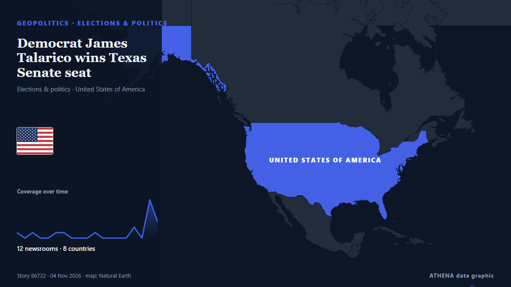

Democrat James Talarico wins Texas Senate seat

Democrat James Talarico has won the Senate seat in Texas, according to a race call by the Associated Press. από NPR
Αναφέρθηκε ανεξάρτητα από 20 μέσα σε 13 χώρες από τις 30 Οκτ, πρώτο το The Intercept· η κάλυψη εξαπλώνεται ακόμη. Το ATHENA δεν βρίσκει ενδείξεις κινδύνου στην κάλυψη. Βεβαιότητα 88% (υψηλή): το επιβεβαιώνουν 20 ανεξάρτητα μέσα, μέση αξιοπιστία 74%. Μέσα ανά χώρα: Ηνωμένες Πολιτείες (6), Γαλλία (6), Κατάρ (4). Κάλυψη: 30 Οκτ έως 4 Νοε, 113 ώρες.
Γιατί έχει σημασία: Οι εξελίξεις στην ασφάλεια και τη διπλωματία μπορούν να μετατοπίσουν συμμαχίες, εμπόριο και αγορές πολύ πέρα από τις χώρες που εμπλέκονται.
Τι άλλαξε: 23 νέες αναφορές από 17 μέσα στο 24ωρο έως 4 Νοε.
Πρώτη διατύπωση: Talarico draws a packed campus rally, but can he win over young voters?
Οι τίτλοι των ειδήσεων παρουσιάζονται στα αγγλικά, όπως δημοσιεύτηκαν.
Με μια ματιά
Επιλέγεται, βαθμολογείται και γράφεται από τη δημοσιευμένη μεθοδολογία του ATHENA. Κανένας συντάκτης δεν παρεμβαίνει σε μεμονωμένα γεγονότα. Πώς παράγεται ›
| 30 Oct 16:55 UTC | 1 |
|---|---|
| 30 Oct 22:55 UTC | 0 |
| 31 Oct 04:55 UTC | 1 |
| 31 Oct 10:55 UTC | 0 |
| 31 Oct 16:55 UTC | 0 |
| 31 Oct 22:55 UTC | 1 |
| 01 Nov 04:55 UTC | 1 |
| 01 Nov 10:55 UTC | 0 |
| 01 Nov 16:55 UTC | 0 |
| 01 Nov 22:55 UTC | 0 |
| 02 Nov 04:55 UTC | 1 |
| 02 Nov 10:55 UTC | 0 |
| 02 Nov 16:55 UTC | 0 |
| 02 Nov 22:55 UTC | 0 |
| 03 Nov 04:55 UTC | 0 |
| 03 Nov 10:55 UTC | 2 |
| 03 Nov 16:55 UTC | 0 |
| 03 Nov 22:55 UTC | 7 |
| 04 Nov 04:55 UTC | 14 |
Γιατί αυτοί οι αριθμοί
Σημασία
Κίνδυνος
Βεβαιότητα
Η κάλυψη — ποιος το ανέφερε και πότε
ο τίτλος όπως δημοσιεύτηκε · ανοίγει το πρωτότυπο- The Intercept · Ηνωμένες ΠολιτείεςThe Rise of the Christian Left in Texas
- Irish Examiner · Ιρλανδία‘Clear eyes, full hearts’: Can James Talarico pull off a historic Democratic victory in Texas?
- Al Jazeera English · ΚατάρTalarico draws a packed campus rally, but can he win over young voters?
- BBC News · Ηνωμένο ΒασίλειοDemocrats are used to heartbreak in Texas - could Talarico turn the tide?
- France 24 English · ΓαλλίαUS midterms: Could Senate candidate James Talarico turn Texas blue?
- France 24 English · ΓαλλίαUS midterms: Talarico seeks to break Democrats' 30-year losing streak in Texas
- France 24 English · ΓαλλίαUS Midterms: Texas Democrat Talarico holds last rally ahead of vote
- Al Jazeera English · ΚατάρTalarico wins Senate race, ending decades of Republican dominance in Texas
- NPR · Ηνωμένες ΠολιτείεςDemocrat James Talarico wins Texas Senate seat
- PBS NewsHour · Ηνωμένες ΠολιτείεςDemocrat James Talarico wins election to U.S. Senate from Texas
- Forbes Business · Ηνωμένες ΠολιτείεςMidterm Election Results (Live Updates): Democrat James Talarico Wins Texas Senate Race
- Fortune · Ηνωμένες ΠολιτείεςJames Talarico wasn’t born the last time a Democrat won a Texas Senate race. At 37, he won one despite $200 million from Elon Musk to stop him
- DW English · ΓερμανίαUS midterms: Democrat Talarico wins Texas Senate seat
- APA (English) · ΑζερμπαϊτζάνDemocrat James Talarico wins US Senate race in Texas
- Times of India · ΙνδίαDemocrat James Talarico breaks Republican stronghold in Texas: Why it's a big deal
- PBS NewsHour · Ηνωμένες ΠολιτείεςWATCH: Democrat James Talarico speaks after winning Texas Senate seat
- BBC News · Ηνωμένο ΒασίλειοJames Talarico becomes first Democrat to win Texas Senate seat since 1988
- Indian Express · ΙνδίαTalarico wins Texas senate race, ending a three-decade drought for Democrats
- Euronews English · Γαλλία‘We defeated Goliath’: Talarico says after historic Texas Senate win
- France 24 English · ΓαλλίαUS midterms: Democrat James Talarico wins Senate race in deep-red Texas
- Al Jazeera English · Κατάρ‘We defeated Goliath’: Texas Democrat James Talarico wins Senate seat
- Euronews English · ΓαλλίαUS midterm elections: Cheers erupt as Talarico's Texas victory is projected
- Al Jazeera English · ΚατάρRepublicans fuming after Democrat Talarico flips Texas Senate blue
- Nile Post · ΟυγκάνταTalarico becomes first Democrat to win Texas Senate seat since 1988
- Mainichi (English) · ΙαπωνίαDemocrat James Talarico flips a US Senate seat in Texas and sends a shock through the GOP
- Mothership · ΣιγκαπούρηJames Talarico wins Texas senate race, 1st Democrat to win the state since 1994
- Business Recorder · ΠακιστάνJames Talarico becomes first Democrat to win statewide in Texas since 1994
- Punch · ΝιγηρίαUS midterms: Democrat Talarico flips Texas Senate seat